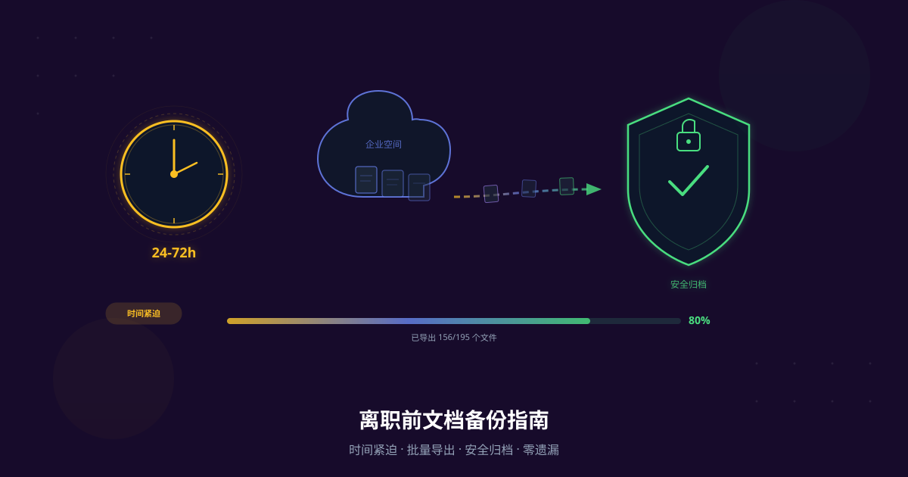

- 离职后通常24-72小时内账户权限就会被回收，文档将无法访问
- 离职前应导出所有个人创建的文档和参与编辑的重要文档
- 使用批量导出工具可在30分钟内完成全部文档备份
- 导出格式推荐：工作成果选PDF归档，继续编辑选Word/Markdown
- 建议在提离职前就开始准备，不要等到最后一天
上个月，一位朋友提了离职，以为还有时间慢慢整理文档。结果最后一天交完工牌，当天晚上账号就被停用了。他三年写的产品方案、复盘总结、学习笔记，全部无法访问。
这种情况比你想象的更常见。据Veeam 2024数据保护报告，76%的企业曾经历数据丢失事件，而员工离职是触发权限回收的最常见场景之一。今天我想分享一套完整的离职文档备份方案，帮你避免这种遗憾。
了解账户封禁、误删、服务停运等场景下的数据丢失风险，以及如何建立备份策略。
离职后你的文档会怎样？
离职后账户权限通常在24-72小时内被回收，你创建的所有文档都将无法访问。据Gartner 2024企业IT管理调查，超过90%的企业会在离职流程完成后立即回收云协作账户权限。这意味着你的工作成果可能在一夜之间变得不可触及。
账户权限回收时间线
不同公司的权限回收速度不一样，但普遍比你预期的要快：
- 当天回收（约40%企业）：离职手续办完当天即停用账户
- 24小时内回收（约35%企业）：IT部门次日处理
- 72小时内回收（约20%企业）：流程较慢的公司
- 超过72小时（约5%企业）：极少数管理松散的团队
在我们接触的用户中，最常见的情况是：最后一天交工牌，当晚IT就批量禁用了离职员工账号。很多人根本没有心理准备。
哪些文档会失去访问权？
答案很残酷：几乎所有的。只要是存储在公司企业版石墨文档空间里的内容，都会随着账户权限一起消失。这包括：
- 你个人创建的所有文档（即使是你原创的内容）
- 别人分享给你的文档
- 团队空间里你参与编辑的文档
- 你收藏的所有文档
一位产品经理在某互联网公司工作了4年，积累了200多份产品方案和竞品分析。离职当天下午交完手续，晚上想导出几份重要文档时发现账号已经被禁用。后来联系前同事帮忙导出，但对方也只有部分文档的查看权限。最终，只找回了不到三分之一的资料。
离职前必须备份的5类文档
离职备份的核心原则是：凡是你投入了智力劳动、且未来可能用到的内容，都应该导出保存。据LinkedIn 2024职场调研，职场人平均每2.7年换一次工作，每次离职时平均有150-500份文档需要整理。以下5类文档的优先级最高。
- 个人创建的所有文档 - 产品方案、技术文档、设计稿说明
- 参与编辑的重要项目文档 - 你有核心贡献的协作文档
- 个人成长记录 - 周报、月度复盘、季度总结、OKR
- 获得的培训资料和学习笔记 - 培训PPT、读书笔记、行业分析
- 工作模板和流程文档 - 你整理的SOP、模板、CheckList
很多人只想到备份"大的"方案文档，却忽略了周报和复盘。但实际上，这些记录是你职业成长最好的证明。面试时复盘你过去做过什么、取得了什么结果，这些细节在原始文档里才能找到。

批量导出工具可以一次性选中多个文件夹
3步完成全部备份（实操教程）
使用批量导出工具，500份以内的文档通常30分钟即可完成导出。相比手动逐个下载（每份文档需要点击5-6次，100份就要500多次操作），工具化方案效率提升超过10倍。以下是经过验证的3步流程。
从安装到导出的全流程详解，涵盖所有文档类型和格式选择。
Step 1：列出需要备份的文档清单
别急着动手导出。先花10分钟理清楚有哪些内容需要备份：
- 打开石墨文档，进入"我的文档"，浏览所有文件夹
- 进入"团队空间"，找到你参与的项目
- 检查"收藏"列表，看有没有遗漏的重要文档
- 查看"最近编辑"，确认近期工作相关文档
石墨文档的"我创建的"筛选功能可以快速找到所有你原创的内容。在文件列表页面选择"我创建的"筛选条件，能帮你一目了然地看到需要备份的文档范围。
Step 2：使用批量导出工具一键导出
手动导出的痛点很明显：每份文档至少要点击5次（打开、菜单、导出、选格式、确认），100份就是500次操作。而且文件夹结构会丢失，所有文件平铺在下载目录，后期整理极其耗时。
使用批量导出工具的操作流程：
- 安装浏览器扩展 - 在Chrome/Edge/Firefox扩展商店搜索安装
- 登录石墨文档 - 确保你当前已登录且账户权限正常
- 点击扩展图标 - 在浏览器工具栏点击扩展
- 选择导出范围 - 勾选需要导出的文件夹或单个文档
- 选择导出格式 - 根据需求选择PDF、Word或Markdown
- 点击开始导出 - 等待进度完成即可
从下载到配置的完整步骤，3分钟完成安装，即刻开始导出。
Step 3：验证备份完整性
导出完成不代表万事大吉。一定要做验证：
- 数量核对 - 导出的文件数量是否与清单一致
- 随机抽查 - 打开5-10个文件，确认内容完整、图片正常
- 结构检查 - 文件夹层级是否保留，命名是否正确
- 特殊文档 - 表格、幻灯片、思维导图是否格式正确
文件数量差异不超过2%（个别文档可能因权限限制无法导出），随机抽查的文档内容完整无乱码，文件夹结构与云端一致。满足这三点，备份就算成功。

导出后保留完整的文件夹层级结构
离职文档备份的注意事项
离职备份不是"想带什么就带什么"，需要注意法律和职业道德边界。据中国裁判文书网数据，近年来因离职员工违规带走公司文档引发的劳动仲裁案件呈上升趋势。了解边界，保护自己。
什么可以带走，什么不能？
| 可以带走 | 不建议带走 | 绝对不能带走 |
|---|---|---|
| 个人工作总结、复盘 | 未公开的产品规划 | 客户数据和联系方式 |
| 通用技能笔记和模板 | 内部培训的独家方法论 | 商业合同和财务数据 |
| 公开的行业分析报告 | 竞品分析（含内部数据） | 代码和技术专利文档 |
| 自己的学习笔记 | 团队流程文档 | 涉密的战略规划 |
如果你签署了保密协议（NDA）或竞业限制协议，请务必仔细阅读条款中关于"信息资产"的定义。遇到不确定的情况，建议直接问主管："这份文档我可以留一份个人备份吗？"坦诚沟通比事后纠纷好得多。
导出格式怎么选？
不同目的对应不同格式：
- PDF - 适合归档和作品集展示，格式最稳定，但无法编辑
- Word（docx） - 适合后续需要修改的文档，兼容性好
- Markdown - 适合技术文档和个人知识库，轻量且可搜索
- 同时导出多种格式 - 重要文档建议PDF+Word双份保存
建议的时间节点
根据我们收到的用户反馈，最佳备份时间是决定离职、但还没有正式提出的阶段。这时候你有充分的时间从容操作，不会手忙脚乱。
- 提离职前1-2周 - 开始整理备份清单，不急不躁
- 提离职当天 - 完成首次全量备份
- 最后工作日前一天 - 最终补充备份近几天的新文档
- 最后工作日 - 验证备份完整性，确认无遗漏
最后一天通常要忙于交接、退还设备、告别，根本没有时间坐下来仔细备份。而且如果导出过程中遇到问题（网络卡顿、工具报错），你已经没有时间解决了。
如果你的文档数量超过1000份，或需要迁移到新平台，参考这篇详细的迁移方案。
常见问题
离职后还能访问之前的石墨文档吗？
通常不能。大多数企业会在离职手续完成后24-72小时内回收账户权限。一旦权限回收，所有文档（包括你创建的）都无法访问。据Gartner调查，超过90%的企业会在离职当天或次日停用账户。唯一的补救方式是在离职前完成备份。
公司的文档我可以备份带走吗？
需要区分类型。个人工作总结、学习笔记、通用模板通常可以保留。但涉及客户数据、商业机密、核心技术的文档属于公司资产，带走可能违反保密协议。简单判断标准：如果这份文档发到朋友圈你不会心虚，大概率可以带走。拿不准的，直接问主管。
离职备份需要多长时间？
取决于文档数量和方式。手动逐个导出100份文档约需2-3小时。使用批量导出工具，500份以内通常30分钟搞定。我们建议预留半天时间，包含整理清单、执行导出、验证完整性三个环节。文档超过1000份的，参考数据迁移指南中的分批导出策略。
写在最后
离职是职业生涯中的正常环节，但每一段工作经历中产生的知识资产都值得被好好保存。那些你写的方案、做的复盘、整理的笔记，是你能力成长的证据，也是下一段旅程的起点。
总结一下核心要点：
- 权限回收比你想象的快，别抱侥幸心理
- 决定离职时就开始准备，别等到最后一天
- 用工具批量导出，别傻傻手动一个个下载
- 注意法律边界，不该带的别带
- 导出后一定验证，确保备份真的完整
如果你正在考虑离职，或者已经提了离职，现在就行动起来吧。30分钟的投入，换来的是多年工作成果的安全保障。
- 今天就花10分钟列出你的文档备份清单
- 安装批量导出工具，先测试导出几个文件
- 确认哪些文档可以带走，哪些不行
- 在日历上标记"备份截止日"，给自己留足时间